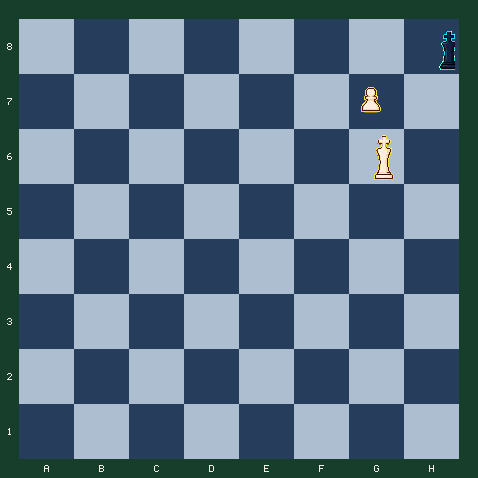

7月29日 · 早报 · 升变残局
一步升变，决定是将杀还是和棋
黑王已被钉死在角落，你的通路兵只差一步升变。但升成后还是车，结果天差地别。
难度 3/5 · 预计 6 分钟 · 3 次关键选择 · 主题：兵的升变与升变棋子的选择
故事引入
当通路兵冲到对方底线，规则允许你把它换成后、车、象或马——这叫升变。绝大多数时候升后是最强的，因为后的火力覆盖横、竖、斜三条线。
这个局面里黑王已经被自己的兵和棋盘边角关在 h8。你的白王正逼近保护位，通路兵在 g7 蓄势待发。关键不在于要不要升变，而在于升变成什么：升后会立刻制造将军并收网，升车却会把胜利让出去。
注意走法的写法：升变用五个字符表示，例如 g7g8q 表示「兵从 g7 走到 g8 并升变成后」；末尾的 q 是后（Queen），换成 r 就是车（Rook）。
升变是国际象棋里最戏剧性的一刻
一个走了整局都只能前进一格的弱小棋子，在底线瞬间变成全场最强的后。十九世纪起就有大量「兵升变翻盘」的名局。但棋手也常常因为贪心或习惯直接升后，错过升车、升马更精确的杀法——升变的选择本身就是一道计算题。
今日局面
白方走三步：先用王占住保护格，再升变成正确的棋子，最后将杀黑王。

行棋方：白方 · FEN：7k/6P1/6K1/8/8/8/8/8 w - - 0 1
今日问题
三步完成：到位、升变、收网
每走一步后对手会自动回应。第一步先把白王走到保护位，第二步选择升变棋子（仔细看升后和升车的差别），第三步完成将杀。
答案与逐步讲解
第 1 步：g6f7 · 对手回应 h8h7
第一步正确：Kf7。白王从 g6 走到 f7，既能控制 g8（升变后的落脚格），又将军黑王（f7 不直接将军，但封死了黑王南下逃路）。黑王被兵和边线困住，只能从 h8 挪到 h7。
第 2 步：g7g8q · 对手回应 h7h6
第二步正确：g8=Q+。兵 g7 冲到 g8 升变成后（g7g8q，末位 q 代表后）。白后站在 g8，沿 g8-h7 斜线立刻将军黑王，并占据第 8 行准备收网。黑王被迫继续退到 h6。注意：后同时控制横、竖、斜，这就是为什么必须升后。
第 3 步：g8g6
第三步正确：Qg6#。白后从 g8 走到 g6，沿 g6-h7 斜线封死黑王 h6 的退路，同时 f7 白王控制 h7/g7/h5 等格。黑王在 h6 既不能前进、不能吃后、也没有棋子能挡，是漂亮的将杀。
完成总结
三步完成。整条杀法的核心是第二步：升后让白棋沿斜线将军并控制 h7，升车则完全没有这层火力。升变前先想清楚你需要的是横竖斜全覆盖（后），还是只挑某一条线（车/象/马）。
常见错误
如果走 g6g7
Kg7 看似保护兵，但 g7 已经被白兵占着，王不能走到自己的兵上。白王的任务是去 f7 控制升变格 g8，不是挤到兵旁边。
复盘：升变是一道选择题
- Kf7 先到位：白王控制升变格 g8，并把黑王钉在底线角落。
- g8=Q+ 升变成后：后的斜线火力制造连续将军，这是车做不到的。
- Qg6# 收网：白后和白王配合，封死黑王最后的逃格。
- 升变前先问自己——你需要的是横竖斜全覆盖（后），还是只挑某一条线（车/象/马）。
带走一句：
升变不只是「把兵换成最强的棋子」，而是根据这步需要的攻击线路选棋子；多数时候升后，但永远先想清楚为什么。
常见疑问
Q：为什么必须升后？
A：后同时控制横、竖、斜三条线。升到 g8 后，白后沿 g8-h7 斜线将军黑王 h7，并立刻准备 Qg6# 收网。车不控制斜线，制造不出这层连续将军。
Q：升车为什么不行？
A：升车 g8=R 只控制横线和竖线，没有斜线火力，所以不会将军 h7 的黑王。黑王因此获得一整步自由调整，白方在限定步数内无法将杀。
Q：为什么要先走王？
A：升变后的棋子需要保护。白王走到 f7 后控制 g8，即使黑王想过来吃升变后的棋子也会被白王看住。先到位、再升变，是这个残局的标准顺序。
Q：升变的走法怎么记？
A：升变走法写成五个字符：前四位是起点到落点，第五位是升变成的棋子。g7g8q 表示兵从 g7 到 g8 升变成后（Queen）；把 q 换成 r（车）、b（象）、n（马）就是升变成其他棋子。
想亲自走一遍这盘棋？
点击下方链接进入互动版，可以点击或拖动走棋，每一步都有即时红绿反馈和教练讲解。
棋刻 Chess Moment · 每天三分钟，想明白一步棋